North Korean Economy, its establishment, its collapse and its present
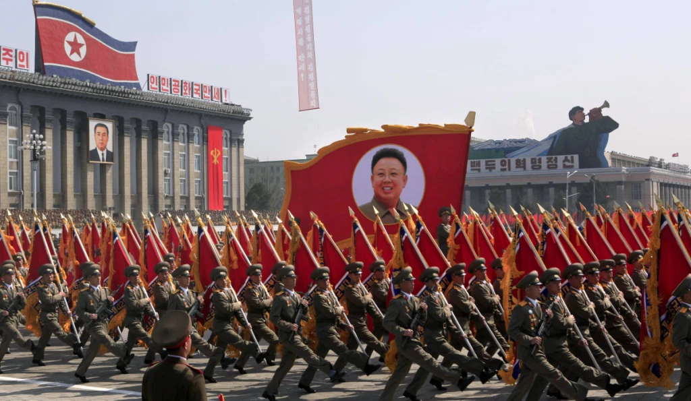
How did North Korea's economy, once better than the South, end up where it is today? A review of the economic plummet of one of the most closed modern societies and what led to it.
Author's Note:
One should be extremely wary of political agendas and propaganda while consuming any articles, pieces of news, or media about the handful of leftist governments in our world.
Throughout our lives, we are bombarded with western-originating propaganda in our news outlets and even social media. This should not be surprising as the latter (social media on the American internet) virtually emerged from the same ecosystem of capital gains as the former, unlike Minitel and the like, which promised a more decentralized internet). We often don't give a second thought or the benefit of the doubt when talking about conditions or situations in socialist states, even though sources are often murky.
It is important to remember that mega-corporations mostly own what we see and hear around us, and no leftist government is a friend of mega-corporations. It should not come as a surprise that money will be spent to keep leftist ideas out of the minds of the working class.
Now, to be quite frank, this was not an awareness I had as a sophomore year student, and this article is from around that time. Half of my references being from Wikipedia should be self-explanatory. It is possible that a good chunk of information I used in this article originates from propaganda outlets. So take everything with a grain of salt.
— Cemre, July 2023
Now one of the most infamous, North Korea's living standards and economy were once way above average.
North Korea or "The Democratic People's Republic of Korea" once was a strong alternative to its capitalist counterpart, the South in terms of economy. The border was open to travel and North Korean residents used to bring expensive gifts, like washing machines and other household items to their relatives across the border. But why was there a distinction between them in the first place?
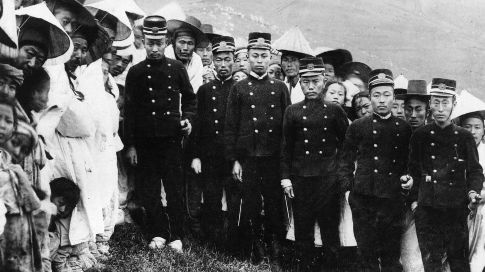
Japanese officers in Korea during Japanese occupation
A tale of two Koreas
During the second world war, Korean peninsula was under Japanese occupation. When the USSR took advantage of a weakened Japan and the Red Army marched into Pyongyang, it gained power and popularity in the North by liberating it from decades long Japanese occupancy. Japan still holded the soil below the 38th parallel, which was later seized by the US, following Japan's surrender. Just like that, the Korean peninsula was split into two neighboring countries in 1945.
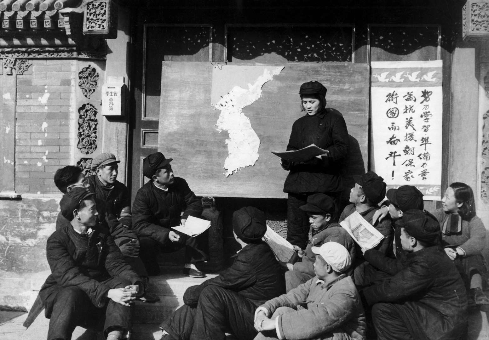
Public "political education" from the early years of North Korea.
Early years of North Korea
Stalin, upon the Red Army's entrance into Pyongyang took his chance to install a satellite government in the North. The USSR expressed their support on the guerilla leader Kim-Il Sung who was an important figure in the guerilla fight against Japanese occupancy. He was later appointed the head of the Provisional People's Committee, the provisional government for the North.
Kim Il Sung's policies included the equal distribution of land among farmers and nationalization of key industries.
Soviet forces left Pyongyang in 1948. After a joint conference the same year in Pyongyang, the North and the South chose to go to elections separately (which was not popular among neither of the states' residents) and the Democratic People's Republic of Korea was formed, now known by the public as North Korea.
It was not until in 1958, when Kim Il Sung, resisting the attemps of deposition aimed at him by the Soviet Union and China, sent off the Chinese army home. After this, North Korea was seen as an independent state for the first time in its history.
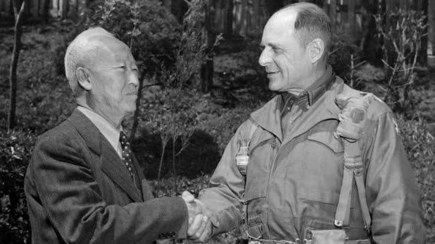
First South Korean president Syngman Rhee and Commander Matthew Bunker Ridgeway
Early years of South Korea
In the South, a similar process was taking place. But the US was neither acting as a liberator nor an ally but an administrator. The US government appointed John R. Lodge to administer Korean affairs as military governor of South Korea and head of the USAMGIK (United States Army Military Government in Korea). He refused to meet with the delegation of the Provisional Government of the Republic of Korea (controlled by the Chinese) and also refused to recognize the People's Republic of Korea (North Korea). The PRoK was outlawed shortly after.
The US held elections in October 1946 and Syngman Rhee was elected the first president of the Provisional Government.
What did Syngman Rhee accomplish?
Syngman Rhee was the most well-known politician in the South. He quickly got popular due to his pro-capitalist anti-communist but also anti-mandate stance on the Korean affairs. He expressed that in order for the Korean people to truly think of the US as an ally, an independent Korean republic in the South needed to be established.
The foundation of current South Korea, the Republic of Korea
The American government eventually gave in to the pressure, but in the years of American occupation, 30 to 100 thousand left-wing insurgents were killed by the occupation government military. Alleged communists were executed without proper trial.
In 1948, after the joint conference, the Republic of Korea was founded with Syngman Rhee as the first president.
Was the new government accepted by the commoners?
There is no research on the public consensus. But a group of people of poor socio-economic background who were against the newly formed US-backed government on their land, rose up but were easily defeated.
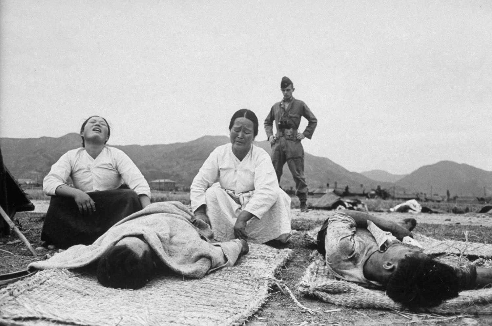
Aftermath of a fight following the Jeju uprising
This incident is now called the Jeju uprising (ì œì£¼4·3사건). It was launched by the South Korean Labor Party and its supporters as an anti-imperialist insurgency that favored communism. Syngman Rhee (at that time the president of the First Republic of Korea) declared martial law to suppress the uprising. His government later launched an eradication campaign aimed at rebels in rural areas. 10% of Jeju population was killed and more fled to Japan. War crimes were reportedly committed by both sides, for which the South Korean government formally apologized in 2006, almost 60 years after the incident.
The Korean War
Following a conflict about the new border, which neither of the two states accepted as permanent, tension rose quickly and North Korea forces backed by the Soviets and China crossed the border in 25 June 1950. In response, the UN dispatched its forces. The South advanced until the Chinese border and the North advanced until the Sea of Japan at different points in the war while Seoul changed hands four times. The war sweeped all of the Korean peninsula. The frontier was once again the 38th parallel when land combat practically stopped and air combat went on for another 2 years. It was the first example of Jet Fighter dog fights.
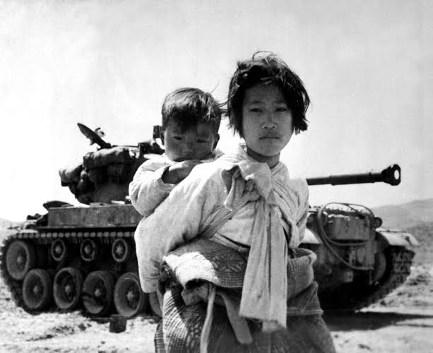
2 to 3 million civillians died in the Korean war
The border was basically reverted back to its the pre-war position, at the cost of 2 to 3 million civilians' lives. Just like that, with a 2 miles wide demilitarized zone (DMZ) inbetween, the two Koreas were born.
From that day on, South Korea continued its path on a free market and capitalism-driven country and made several good moves that boosted its economy. That is the topic of another post.
Economy of North Korea in early years
When the Japanese ruled the peninsula, they had designated the North as the heart of Korea's heavy industry and the South as its agricultural center. After the war, the North Korean government had significant framework for heavy industry. So it was logical for them to focus on this as their expertise, and they did so. North Korea was funded by The Soviets and China. With the help of their communist allies, they saw a rapid growth in economy.
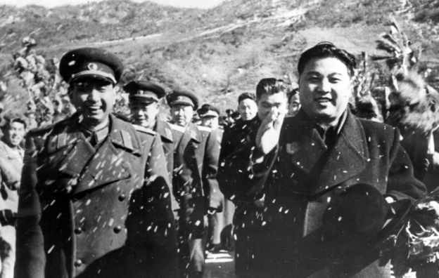
The first Kim
In fact, the economy of North Korea was going so well, there was a military coup in South Korea which was conducted by individuals that thought their state was falling behind the North and needed improvements.
Where it first went wrong
In the 50's, the North Korean government was still not paying attention to agriculture. Only 20% of their land could be used for agriculture, the North did not have time to lose, they needed to help farmers increase their productivity. But they failed to do so.
In the 60's, there was a Green Revolution going on in the world. The Green Revolution, or the third agricultural revolution was a set of technology transfer initiatives. It was a package of reforms to be adopted instead of traditional methods. Employment of high-yielding varieties, chemical fertilizers, agro chemicals, dwarf wheats and other technologies were among the package's most important features. The father of Green Revolution, Norman Borlaug even received the Nobel Peace Prize in 1970, because his research was credited for saving over a billion people from starvation.
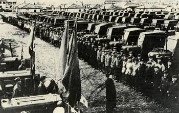
North Korea's last agricultural investment in 1953
Unfortunately, North Korea wasn't one of the countries that employed these methods and saved their people from starvation. Missing another milestone, North Korea started to experience food shortages.
These were the last years when the North Korean Won was still more valuable from its South Korean variety.
The North knew it was doing something wrong. So they chose to go for new reforms. They took loans from European countries to try and stop the famina spreading across their country. Unfortunately they seemed to not grasp the true nature of their problems and they could not fix them, even with the european money.
Where it first went really downhill
The state couldn't pay back their debts and instead chose to default on them. With this move they began to deteriorate their relationships with the developed world. This started the worldwide gradual decay of respect for North Korea as a legitimate state. North Korea also ignored the bill for the 1000 Volvo 144's they bought in 1974, now worth $360 million. These Volvos can still be seen roaming the streets of North Korea, mostly as taxis in Pyongyang.
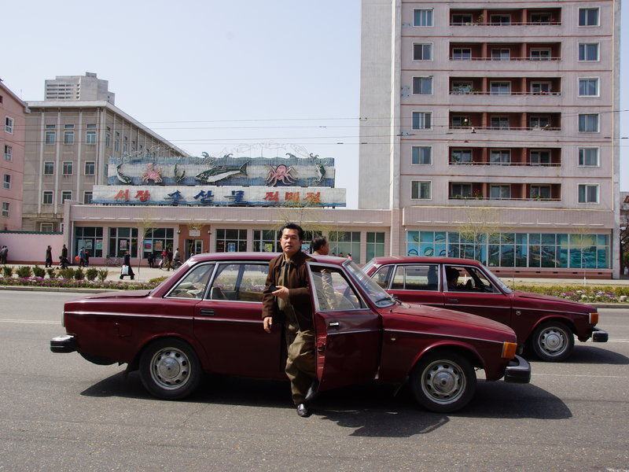
A North Korean getting off a Volvo 144 in Pyongyang.
After they turned their back on the world, they would go for a change of governmental ideology. They changed from Marxism-Leninism to Juche. Juche (first documented in 1955, officially declared as the state ideology in 1972), as Kim Jong Il claims, should not be considered an advancement of the previous ideology, but a completely different one on its own. Juche's main point on economy was self-sustainability, self-sufficiency and self-reliability.
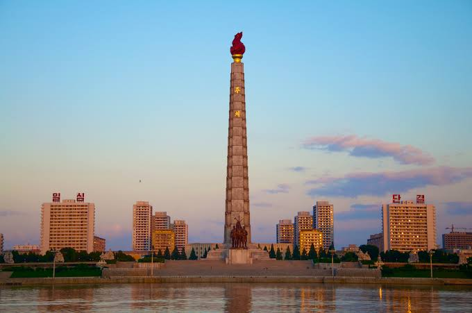
The Juche tower, marking the 70th birthday of Kim Il Sung, the first leader of NK.
They adopted a closed economic system, which can now be seen as signing the death-certificate of the early North Korean economic growth. In an era where both Koreas' economies were growing exponentially, North Korea's GDP per capita halted, and it has been fixed to that point ever since.
A friend in need
Coined by the Nixon Shock and accelerated by the Afghan war in 1979, the Soviet Economy came to a standstill in the years 1979-1985.
Funding went to the military instead of domestic development and Soviet GDP fluctuated along its current value throughout the early 80s. They had built a complex modern economy with many features whose reaction to such drastic changes were unpredictable at the time.
The planned economy couldn't keep up with the new system's demands, so the needs of the people were not met at the time.
The North Korean government at the time was applying a nonsense policy of constructing mega-projects in order to make-over the public face of North Korea, most of which due to later developments were never even finished.
The USSR stopped prioritizing North Korea, and gave up on funding the state as they saw their funds were going into the construction of mega projects instead of necessary development.
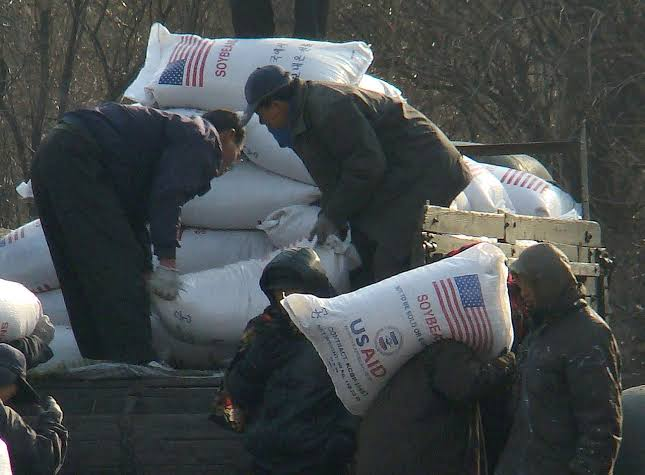
North Koreans unloading the food aid sent by the US.
With Soviet funds out of their reach, the North Korean economy couldn't hang on much longer. Between 1994 and 1998, 240 to 420 thousand people are estimated to have died from famine. North Korea accepted the humanitarian food aid offered by the UN.
Kim Jong Il's economic reforms
Kim Jong Il supposedly had a reputation for mismanaging the economy greatly, which resulted in devastating economical catastrophies. After this, Kim Jong Il started to approve some free-market trade, and worked for its incorporation into the ideology and current practices.
"Money should be capable of measuring the worth of all commodities." — Kim Jong-Il (2002)
In the late 90s, private ownership was decriminalized, the means of production were also decentralized. Small scale bartering and trade was approved by the state.
In 2002, monetization, flexible price & salaries, incentives and accountability techniques were put into practice. This approval of small capitalist practices resemble those observed in communist China before its transition to a semi-capitalist system. During a rare visit in 2006, Kim expressed admiration for China's rapid economic progress.
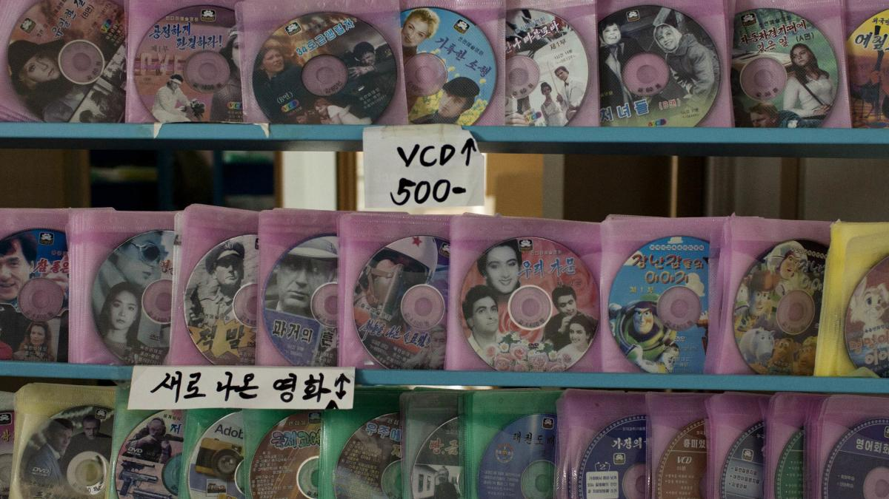
Korean DVDs sold in a North Korean black market
What is happening in the North Korean economy now?
In recent years (mid 90's to present), black markets are on the rise in Korea. There are smugglers, who smuggle beauty products, movies, household items and such from China and sell them in the North Korean black market. Black market exchange rate for the North Korean Won (NKW) is nearly 80 times the official amount. 8,400 and 105 won to the dollar, respectively.
The black market also gives way for investment of some kind. Gasoline coupons issued by the government at $30 per gallon are sold for $32 after increases in gasoline prices to 35$ and the coupon holders (investors) make profit.
Black market or grey market, what is the difference?
Initially named the black market due to the sale of smuggled goods for which the state does not take taxes (North Korea abolished taxes in 1974 as a remnant of an antiquated society), later turned into an unauthorized grey market where citizens could buy and sell somewhat freely.
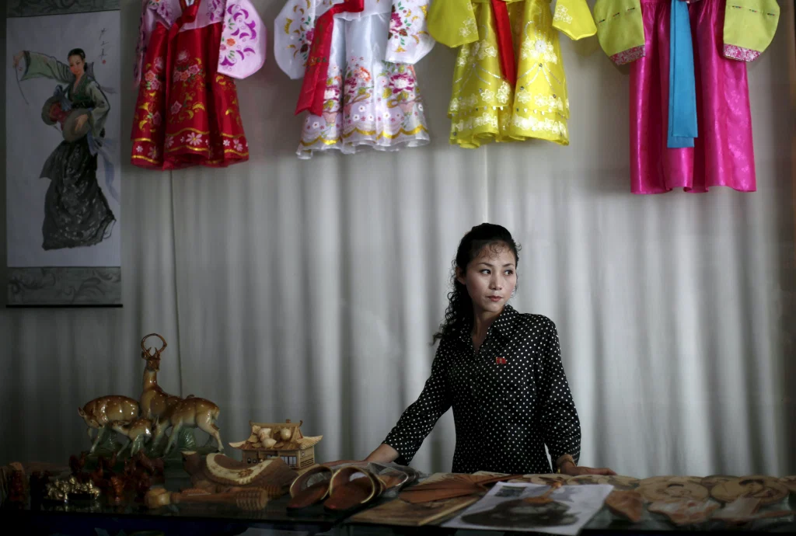
A woman stands in a gift shop in central Rason city, part of the special economic zone northeast of Pyongyang, in this August 30, 2011 file photo. North Korea is a militarized, male-dominated society, but it is women who are making the money as the insular nation allows an unofficial market-based economy to take shape. REUTERS/Carlos Barria/Files
The black market, which started out as buyers and sellers meeting at remote places to avoid being caught and facing charges if they don't have the appropriate amount of bribe money, has grown exponentially and now is not penalized by the state. Now it is an "official" unofficial market, with stalls inside a building and all. North Koreans trade grains, rice, fresh produce as well as South Korean snacks and smuggled electronics. The black market is mainly run by the women of North Korea, because the men are issued to work by the government.
Reports suggest that as of 2017, one-fifth of North Koreans depend on the black market for their needs and their survival. The state had two choices, to look away or to see their citizens suffer. It seems like Pyongyang prefers the former for now.
Illegal activities that help keep North Korean economy afloat
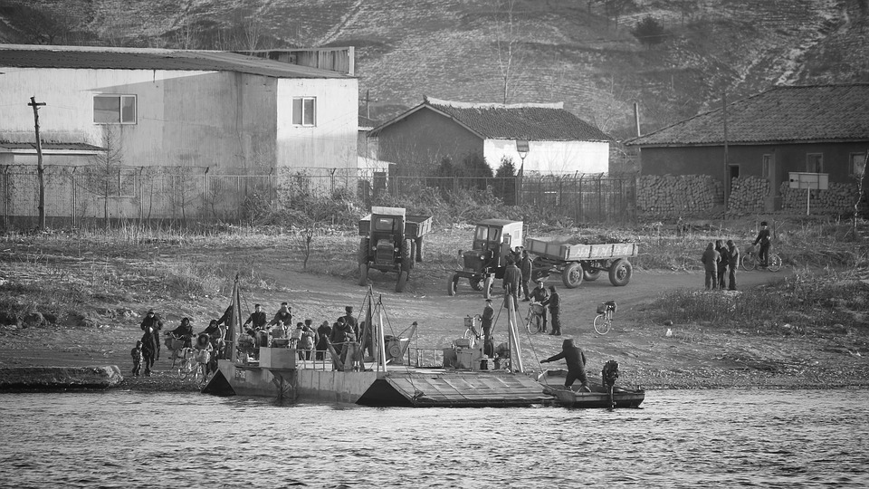
North Korean smuglers on the Chinese-North Korean border
1) Smuggling
North Korean ships are now infamous for smuggling in and out goods for their country Under United Nations Sanctions North Korea's imports and exports are limited but they are not known to comply with said sanctions and still keep their small amount of external trade up and running. The allegations include:
Three North Korean vessels smuggling coal from a ship of unknown origin in the Eastern China Sea or in Japanese ports legally not in a position to refuse the ships that sail under a third nation's flag (namely Togo and Belize) Transfer of more than 250,000 barrels of oil from vessel to vessel using smaller boats, which is harder to detect via surveillance systems.
According to Julian Rademeyer (member of the Global Initiative Against Transnational Organised Crime), North Koreans were implicated in 18 of the 29 rhino-horn- and ivory-smuggling cases involving diplomats since 1986.
Smuggling of great amounts of South Korean Beauty products, especially eyeliners and mask packs.
2) Drug trade
A corporation that operates without any import or export quota restrictions, the Ryugyong Corporation is known to hold large amounts of land for the purpose of growing opium. Opium is then smuggled into neighboring countries and tens of thousands of dollars are sent back to the great leader himself in foreign currency. Opium production declined in the mid 2000's.
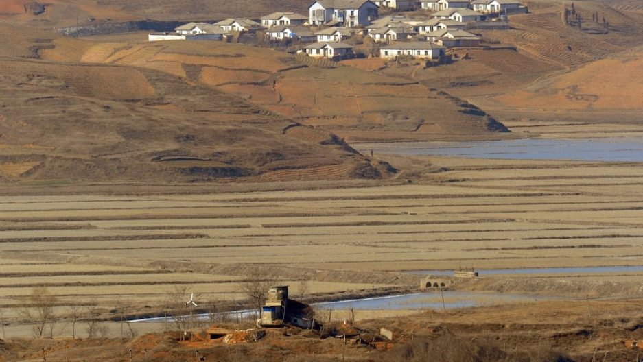
The Ryugyong Corporation is known to hold large amounts of land for the purpose of growing opium
Methamphetamine is issued as medicine in North Korea, and those who get a taste want to get back for more. This is where North Korea's underemployed chemists come forward. They produce to meet the large demand of meth within the country. Which led to an international trade of meth after some time, starting with China and later reaching the Philippines, the United States, Hong Kong, Thailand, western Africa and others.
Between 1977 and 2003, more than twenty North Korean diplomats, agents, and trade officials have been implicated, detained, or arrested in drug-smuggling operations in more than a dozen countries.In 2004, two North Korean embassy employees were caught smuggling 150,000 tablets of clonazepam in Egypt, and in that same year, embassy employees from Bulgaria were arrested in Turkey in possession of over 500,000 tablets of Captagon, with an estimated street value of $7 million.The government of North Korea has only admitted that individuals undertook such acts, and not at the direction of the state.
Wikipedia -- North Korea's Illicit Activities In 2001, income from illegal drugs amounted to between $500 million and $1 billion. In a 2013 Washington Post article, annual revenues from methamphetamine sales are estimated at $100 million to $200 million, according to Balbina Hwang and Max Fisher.
3) Hacking
There are several incidents allegedly caused by North Korean hackers. One is the infamous "$1,000,000,000 North Korean Bank Heist" that Kento Bento explains exactly what happened in great depth. The bank targeted was the Federal Reserve Bank of New York, an institution renowned for its security.
Another incident in which the North Korean hackers succeeded was the theft of US-SK war plans, which was composed of information about the tactical operations to "decapitate" the North Korean regime when needed. South Korean National Assembly member Rhee Cheol-hee said that "about 235 gigabytes worth of military data was stolen by the hackers".
4) Forgery: North Korea's counterfeit US dollars
Over the course of several decades, $50 and $100 bills were forged in North Korea and used by the state in trade. The bills were so convincing that even many anti-forgery machines couldn't tell the difference between them.
These infamous bills were later nicknamed the "superdollars" or the"supernotes". North Korea obtained the same machinery employed by the US itself, and used precisely the same material. Their security strip and watermark were all in place.

Supernotes were high quality counterfeit US dollars forged by North Korea
The investigation on the supernotes, first detected in 1989 in the Philippines, set off a broad investigation throughout the 90's that eventually traced back the dollar to North Korea, and to the late 70's.
The estimated value of the supernotes in circulation is hundreds of millions in terms of american dollars.
Conclusion
The North Korean government saw a growth with outside power from its communist allies in its early years. They did not know how to manage their funds, or to better invest in their land, and they still seem not to be on the right track. The North Korean state resorting to illegal activities to fund itself is not a permanent solution but rather a bad way of treating the symptoms. North Korea, still relying on food aid to feed its citizens, is not going to see an economical expansion anytime soon if they don't go to serious reforms in both domestic and international affairs.
However, a slight chance may be seen sprouting from the black, or grey market. Pyongyang adopting a new model similar to the Chinese may be its way out of the vicious cycle of famine and bad allocation of scarce goods it has been in for five decades.
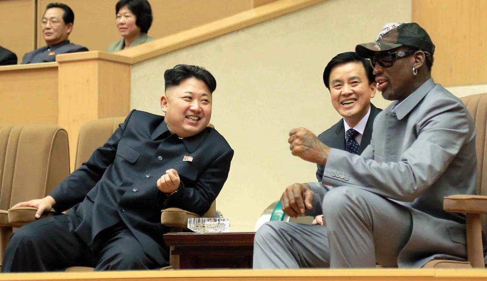
North Korean leader Kim Jong Un talks with former NBA player Dennis Rodman, as they watch an exhibition basketball game in Pyongyang. (Korean Central News Agency/Korea News Service via AP)
The North, with its eccentric leaders, is one of the most unpredictable states in the world. Seems like we'll just have to sit back and watch where fate leads it with time.
References
- https://www.express.co.uk/news/world/805398/North-Korea-split-South-border-DMZ-Kim-Jong-un-Kim-Il-sung-Korean-war-conflict-USA
- https://en.wikipedia.org/wiki/Jeju_uprising
- https://en.wikipedia.org/wiki/Korean_War
- http://totallyhistory.com/us-history/korean-war/
- https://en.wikipedia.org/wiki/Economy_of_North_Korea
- https://espressostalinist.com/2011/11/02/the-juche-idea-in-the-light-of-marxism-leninism/ Kim Jong Il:" The Juche Philosophy is an Original Revolutionary Philosophy" (1996).
- https://www.worldatlas.com/articles/what-is-the-juche-ideology-of-north-korea.html
- https://en.wikipedia.org/wiki/Economy_of_the_Soviet_Union
- https://en.wikipedia.org/wiki/Kim_Jong-il
- https://www.nkeconwatch.com/category/economic-reform/black-markets/
- https://fee.org/articles/in-north-korea-black-markets-are-saving-lives/
- https://www.refinery29.com/en-us/2019/05/232645/north-korea-beauty-products-makeup-smugglers
- https://asia.nikkei.com/Spotlight/N-Korea-at-crossroads/Suspected-North-Korean-coal-smugglers-made-8-port-calls-in-Japan
- https://theadamschronicler.com/north-korean-oil-smugglers-elude-u-s-military/
- https://www.economist.com/middle-east-and-africa/2017/09/21/africa-is-a-smugglers-paradise-for-north-korean-diplomats
- https://en.wikipedia.org/wiki/North_Korea%27s_illicit_activities
- https://gpinvestigations.pri.org/how-north-korean-hackers-became-the-worlds-greatest-bank-robbers-492a323732a6
- https://edition.cnn.com/2017/10/10/politics/north-korea-hackers-us-south-korea-war-plan/
- https://coinweek.com/people-in-the-news/crime-and-fraud/paper-money-whatever-happened-north-korean-counterfeit-u-s-100-bills/